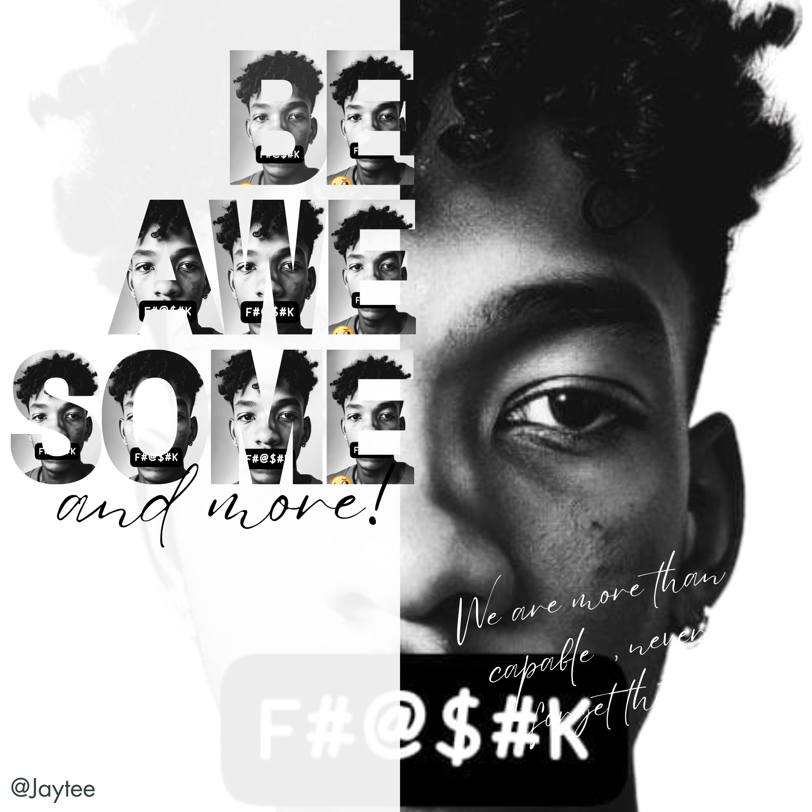
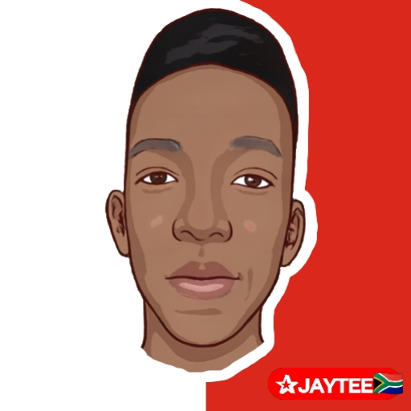
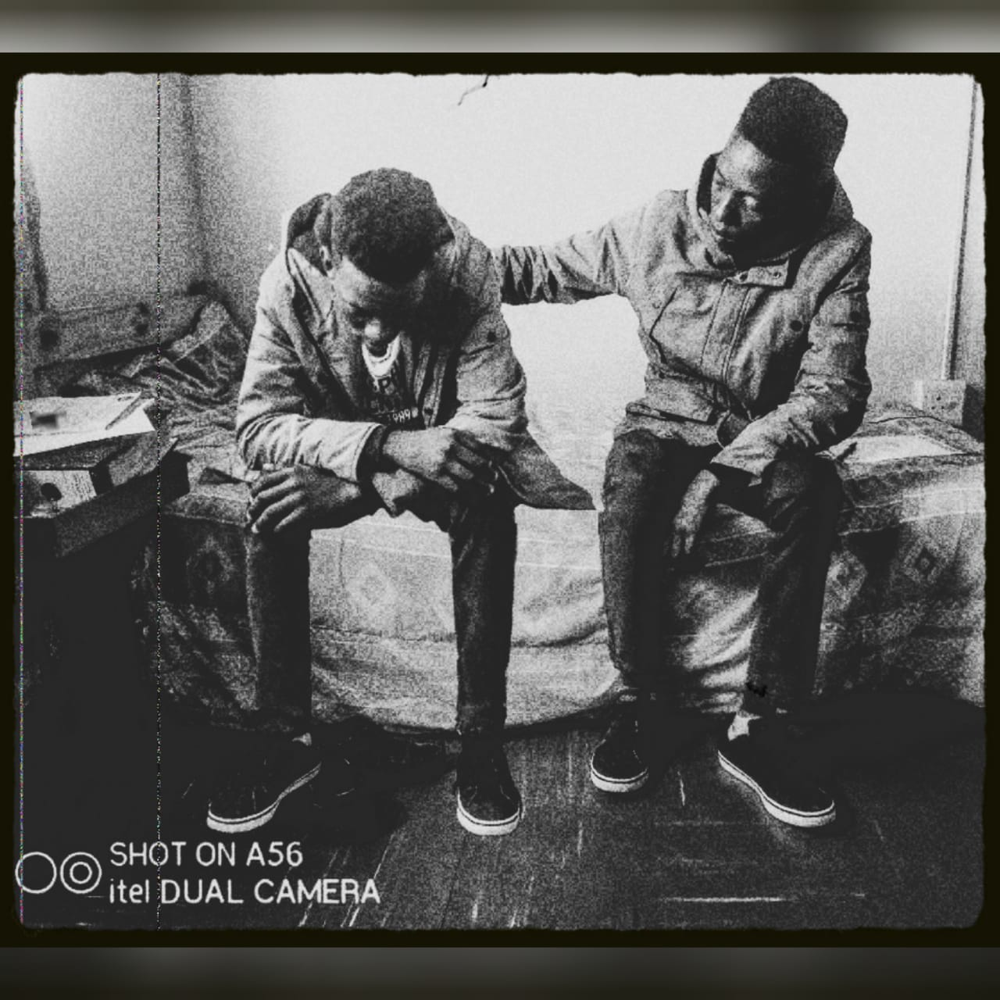
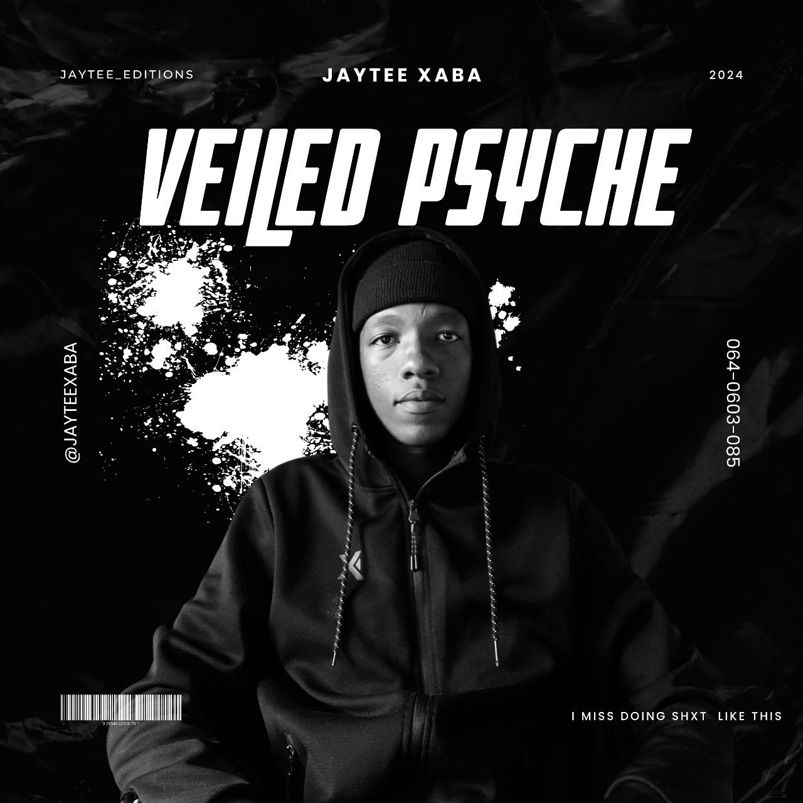
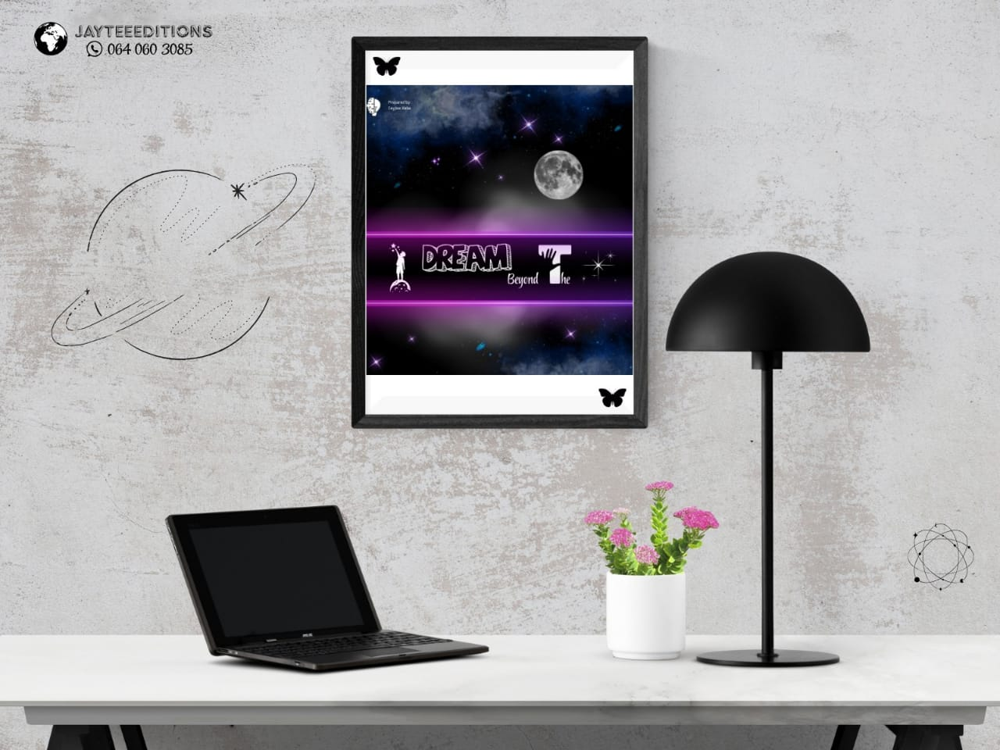
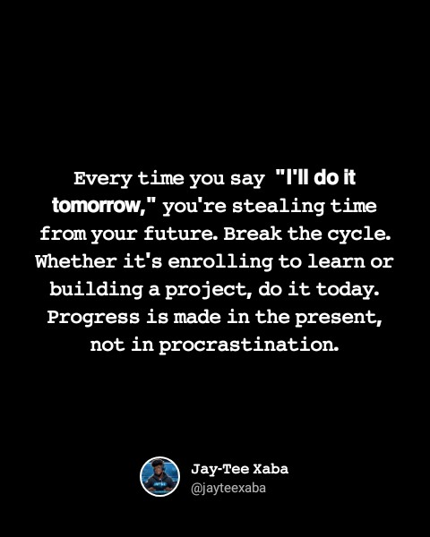
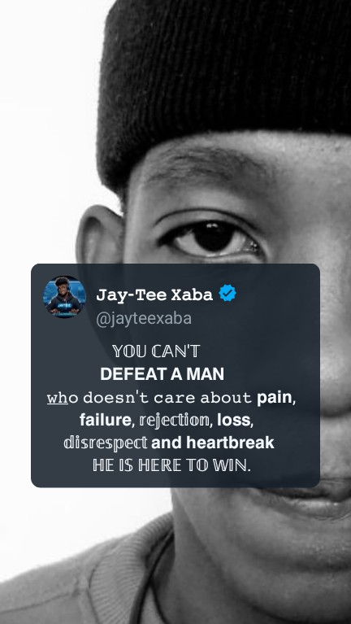

Explore a selection of my work spanning design, development, multimedia, and more. Each project represents creative solutions and technical passion. Click any project for more details or to experience it live.
Brand and marketing concept for child safety through real-time location tracking. Engaging video and materials to promote awareness. No app yet, but the vision is clear!
Tools: Canva, PowerPoint, InShot, Veed
HTML-based prototype for students to track academic modules and progress. Clean, intuitive UI with detailed user flow guide.
Tools: HTML, UI Prototyping
Java code that translates common English phrases into Sesotho using arrays and user input. Practical language tool built with NetBeans.
Tools: NetBeans, Java (Scanner, Arrays)
Planning and implementation of a wireless network: layout, bands, access points, security, and maintenance for reliable connectivity.
Tools: Microsoft Word
Browser-based Tic Tac Toe with an AI opponent in TypeScript. Fun, interactive, and a showcase of algorithmic logic.
Tools: TypeScript, JavaScript, HTML, CSS
Curated coding notes for CPUT students. A comprehensive reference and revision resource for programming concepts and tips.
Tools: HTML (Notes UI)

Exploring identity and style through bold typography and high-contrast visuals. This artwork fuses self-portraiture and creative text for a unique, impactful effect.
#ArtByJaytee

Bold, clean vector portrait artwork, blending digital illustration and personal branding. South African flag and custom color palette for signature JayTee energy.
#AvatarArt #DigitalIllustration

This evocative black-and-white artwork captures two versions of myself—side by side, in solidarity. One is weighed down by struggle, the other offers a hand of support. This image is a lesson: sometimes, your greatest ally is the person you become through hardship. When the world feels heavy, remember—you are not alone, even within your own story.
Every dreamer has two voices: the one that wants to give up, and the one that says, “We didn’t come this far just to give up.” Growth comes when you learn to encourage yourself, to sit with your pain and turn it into power. I made this piece to remind myself, and anyone who sees it, that you are both the student and the teacher in your journey. Keep going. You are becoming the person you need.
#KeepGoing #SelfGrowth #JayTeeArt
This project is more than a song; it's a testament. This is what happens when the hunger to create is stronger than the limitations you're given. Featuring the raw talent of my brother, Xaba Moeketsi "Notation,"and our friend, Mahlangu Maxwell "Thee Ninety-Nine," this track was born from pure, unfiltered necessity.
Funny Thing is that we had no studio, no professional mics, and no budget. We had a story to tell and a fire to share it. The vocals were recorded on a simple Android app "SingPlay". This isn't just a track; it’s a lesson that the most powerful tool is your own fire.
#MadeWithPassion #ResourcefulCreators #NoExcuses #JayTeeMusic
In a world where everyone has a digital mask, who are we really? This trailer concept was built using the help of AI to explore that question. It’s a dark, imagined future that feels closer than we think. The lesson? In the age of avatars, the most rebellious act is to question what’s real.
Technology: Canva Veo

This isn’t just a picture; it’s a statement. It’s for anyone who’s been told they’re not enough. Look closer—that’s the look of a man who has taken hits from life and is still standing. It’s about turning your vulnerability into armor. The lesson is that your identity isn't what people label you; it's what you answer to after the battle.
#ArtByJaytee #Resilience #DigitalIdentity

I made this during a study break on campus, when the pressure was high. It’s proof that your best ideas don't come when you’re forcing them—they come when you give yourself a moment to breathe. The teaching is simple: don’t just work for your future; remember to dream in it, too.
Technology: Canva

This is a message to myself first. That voice that says "I'll do it tomorrow" is the biggest dream killer. This piece is my personal fight against that delay. The lesson is that discipline isn't punishment; it’s a form of self-respect—the hard choice you make today to build the person you want to be tomorrow.
#DisciplineByJayTee #NoMoreDelays

This is more than a quote; it’s a code of conduct. It’s a declaration that I've welcomed pain, failure, and rejection as teachers, not tormentors. They are no longer weaknesses, but the very source of my strength.
You cannot break someone who has already been broken and rebuilt himself. This piece is a reminder that the real victory isn't in avoiding the fight—it's in knowing you can endure anything thrown your way and still be here, ready for more.
#Mindset #Undefeated #WinOrLearn #JayTeeArt
"❤️ - Carrying dreams heavier than this bag -- walking paths that don't always lead home."
This is the quiet reality of the grind. Those solitary walks across campus, head full of code, ambition weighing more than anything on your back. It’s a love for learning so deep that it fuels you, even when the path is lonely. This isn't just a video; it's a window into the developer's journey—a path of constant learning and the relentless pursuit of getting better.
#TheGrind #DeveloperJourney #CodeIsLife #NeverStopLearning